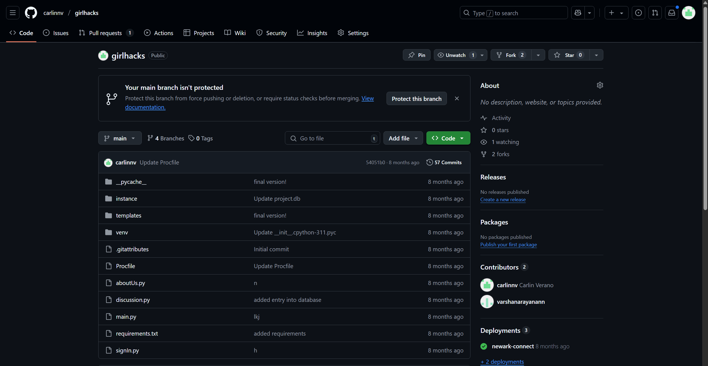
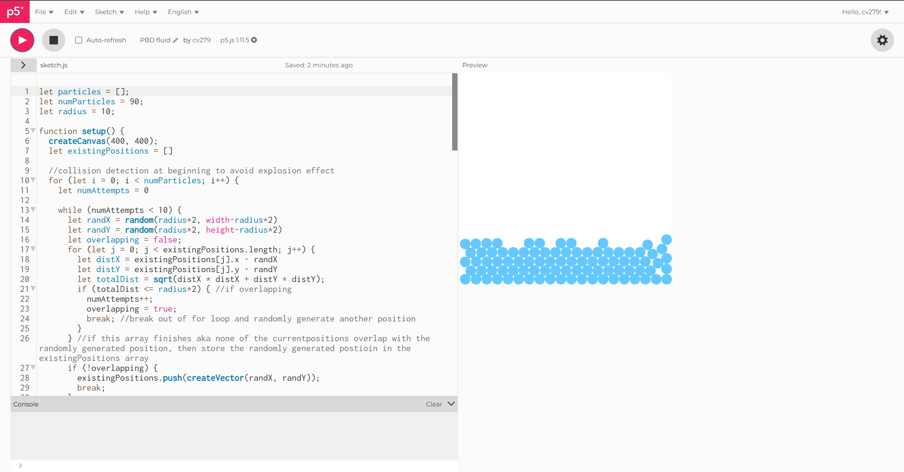

What am I currently working on?
Past Projects

GirlHacks Project
I participated in the GirlHacks hackathon (organized by WiCS at NJIT) with a few of my friends. Our project was called Newark Connect, and it was a community-centered program designed for members of the community to share issues and help each other out.

PBD Fluid Simulation
For my IT 360 Introduction to Computer Graphics class, me and my groupmate created a position-based fluid simulation. Compared to force-based simulations, position-based simulations only take into account the positions and velocities of the particles in the simulation.
Experience
- Research assistant at Dr. Vinnikov's IXR lab (2025-present)
- Research assistant at Dr. Wohn's Social X Lab (2024-2025)
- Computer science tutor